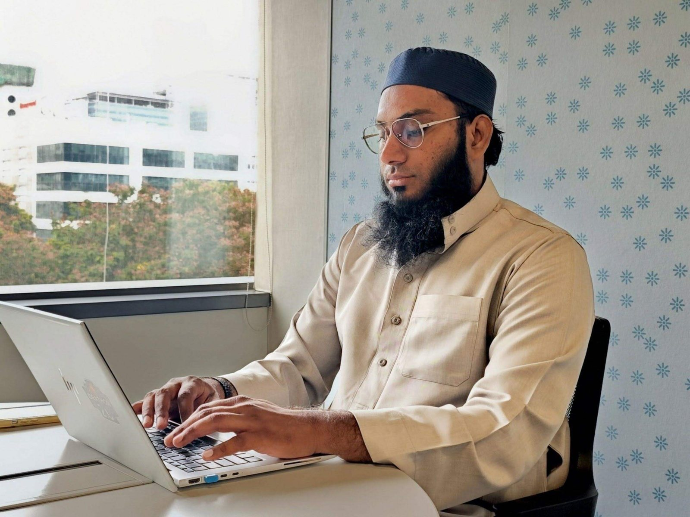

A program manager is a bridge across teams, Ops → Product → Tech → Science → Leadership, carrying the load between them. Click a stop, step inside.

Seven years at Amazon. Four stops on this bridge hold the latest of what I've built; the latest, not the whole list. Click a stop and step inside.